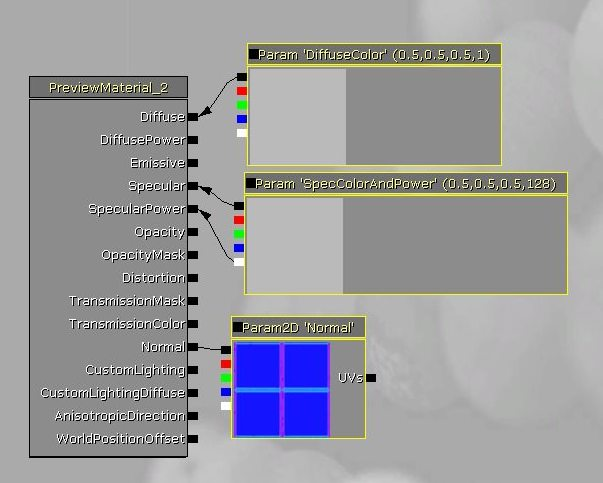
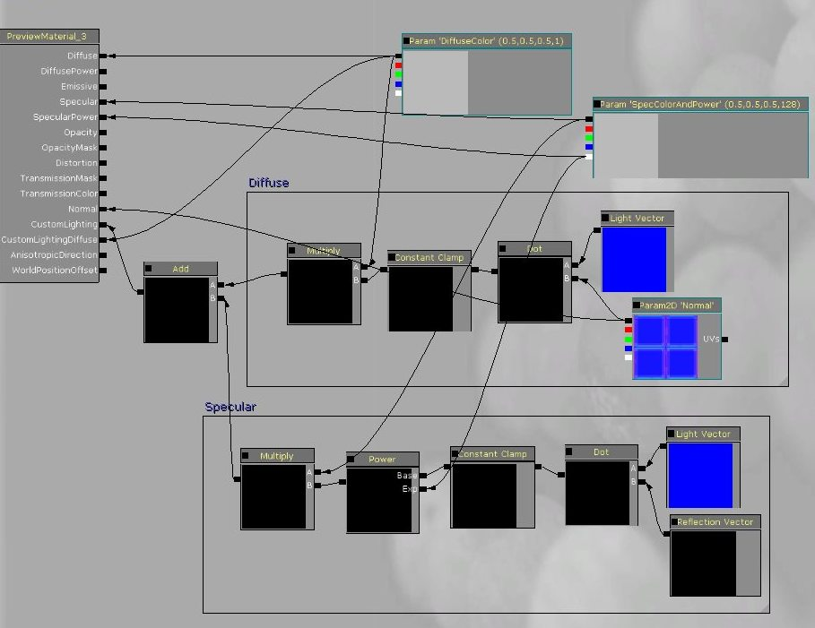
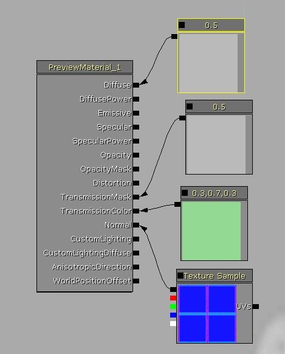

UDN
Search public documentation:
CustomLightingKR
English Translation
日本語訳
中国翻译
Interested in the Unreal Engine?
Visit the Unreal Technology site.
Looking for jobs and company info?
Check out the Epic games site.
Questions about support via UDN?
Contact the UDN Staff
日本語訳
中国翻译
Interested in the Unreal Engine?
Visit the Unreal Technology site.
Looking for jobs and company info?
Check out the Epic games site.
Questions about support via UDN?
Contact the UDN Staff
커스텀 라이팅
문서 변경내역: Daniel Wright 작성. 홍성진 번역.
개요
버전
세팅
라이트 타입과의 상호작용
인풋
- CustomLighting (커스텀 라이팅) - 커스텀 라이팅 인풋은 대부분의 커스텀 라이팅 유연성이 확보되는 곳입니다. 이 입력은 표면에 영향을 끼치는 동적인 제로-에리어 라이트에 대해 계산되며, LightVector는 라이트의 방향으로 설정됩니다. CameraVector, LightVector 등과 같은 입력은 모두 탄젠트 스페이스에 있기에 max(dot(lightvector, float3(0,0,1)), 0) 를 CustomLighting 입력에 걸어주면 (탄젠트 스페이스에서 0,0,1 인) 표면 법선을 사용한 베이직 람베르트 디퓨즈 라이팅을 얻게 됩니다. LightVector 에 의존할 수 있는 유일한 입력입니다.
- CustomLightingDiffuse (커스텀 라이팅 디퓨즈) - 이 입력은 에리어 다이내믹 라이트 (현재는 단지 라이트 인바이언먼트나 스카이 라이트와 함께 사용되는 SH(스페리컬 하모닉) 라이트) 및 방향성 라이트맵 디퓨즈에 대해 계산됩니다. LightVector 노드에 의존해서는 안됩니다.
- Specular and SpecularPower (스페큘러 및 스페큘러 파워) - 이 인풋은 커스텀 라이팅과 함께 사용되나, 방향성 라이트맵으로부터의 스페큘러 라이팅을 계산할 때만입니다. 스페큘러 및 스페큘러 파워 인풋을 커스텀 라이팅과 함께 사용하면 퐁을 사용할 때와 같은 라이트맵 스페큘러 효과를 얻을 수 있습니다.
- 이미시브, Opacity(불투명, 오패시티) 및 오패시티 마스크는 퐁과 똑같이 작동합니다.
- 디퓨즈 및 디퓨즈 파워는 사용되지 않습니다.
- Normal(법선, 노멀)은 여전히 Reflection Vector 에 영향을 끼치나, 방향성 라이트맵을 적용할 때를 제외하곤 라이팅에 사용되지 않습니다.
동적인 라이팅에 대해 퐁 라이팅 모델 재구성하기

그리고 이건 커스텀 라이팅으로 동일하게 만든 라이팅 모델입니다:
다음은 왼쪽 기둥에는 커스텀 라이팅 머티리얼을, 오른쪽 기둥에는 퐁 머티리얼을 적용하고, 도미넌트 라이트와 디렉셔널 라이트로 비춘 상태를 비교해 본 모습입니다. 각각 도미넌트 라이트로 비춘 스페큘러는 어때 보이는지, 디렉셔널 라이트맵 상( 그늘진 구역)의 스페큘러는 어때 보이는지 보십시오.
Transmission(투과) 및 TwoSided(양면)

커스텀 라이팅으로 동일하게 만든 라이팅 모델입니다. 트랜스미션 인풋은 연결할 필요가 없습니다만, 스카이 라이트와 SH(스페리컬 하모닉) 라이트는 현재 커스텀 라이팅과 함께 썼을 때 트랜스미션을 제대로 처리하지 못합니다.